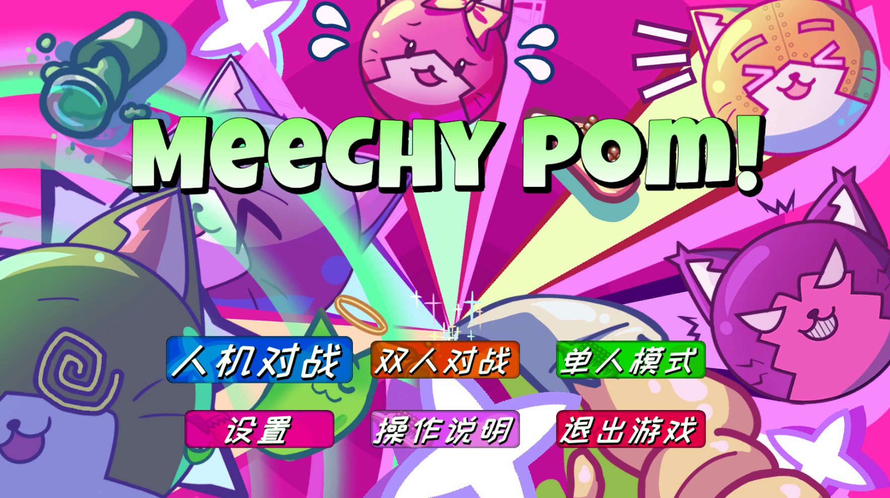
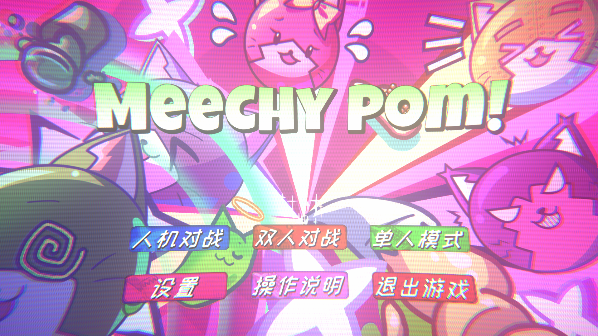
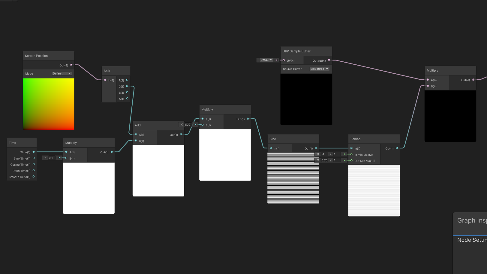
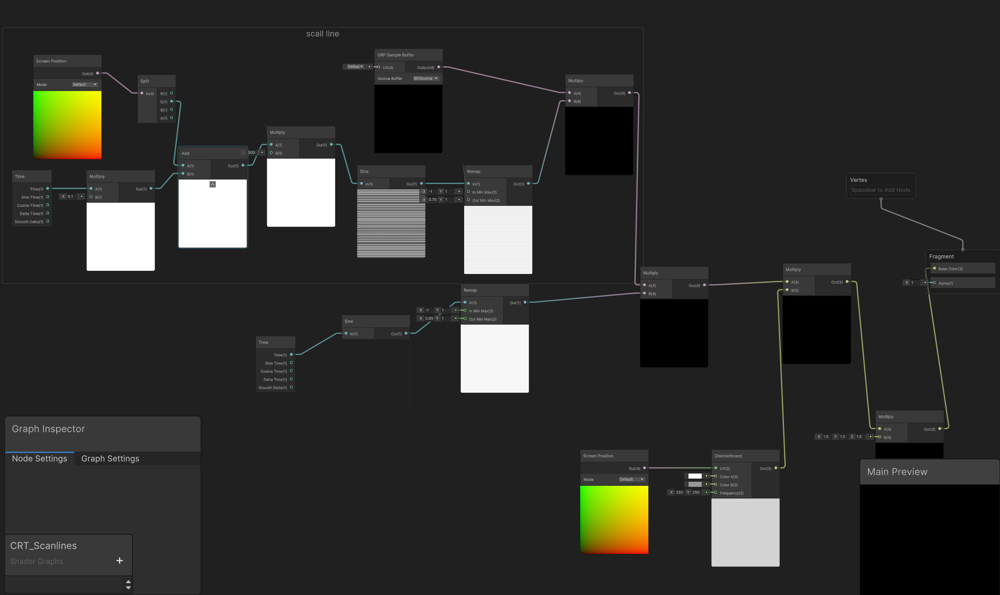
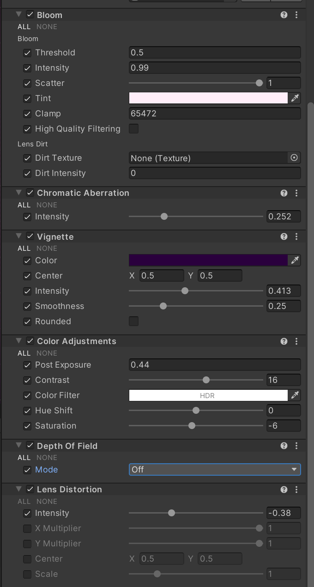

如何用Shader Graph实现CRT效果
什么是CRT
CRT效果（阴极射线管效果）是指模拟老式大头电视或显示器（CRT显示器，也就是大屁股电脑的显示器）显像风格的视觉特征，其特征是画面具有物理弧度，扫描线，RBG荧光光点，在有的老式CRT上还有会在电压不稳定导致的全局明暗微微闪烁，这些效果听起来像是把你的画面“变差”了，但是在有些情况下，会让你的画面多出别样的风味
我们先来看一组对比图，这是我制作的游戏咪西碰CRT的使用前后对比
- 使用CRT效果前

- 使用CRT效果后

注：这里我lens设置为负数，所以画面向里凹，而不是传统CRT的向外凸
在我看来，这绝对是让画面变的更好了
当然，使用CRT效果的独立游戏有很多，前两年爆火的《小丑牌》和《动物井》，你可以自行查看他们是如何使用CRT效果的
如何制作一个CRT效果
在开头已经提到了CRT的特征元素，接下来我们就一条一条的实现
开始之前
请确保你的摄像机（main camera）开启了Post Processing，以便后续的后处理，再新建一个shader graph（Shader Graph->UPR->Full Screen Shader Graph），命名为CRT_Effect或者任意你喜欢的命名。请注意该shader类型为Full Screen Shader。右键该shader新建一个材质。
点开左上角edit，打开project setting，侧边栏找到Graphics，点击在最顶上（或许版本不同会在其他地方）Scriptable Render Pipeline Setting栏中的那个文件，再在那个文件的Rendering中点击Renderer List中的文件（在我这里该文件命名为Renderer2D），点击最底下Add Renderer Feature，添加一个Full Screen Pass Rend，Injection Point改为后处理之前（Before Renderer Post Processing），在Pass Material中拖入我们刚刚新建好的材质，这样准备工作就完成了
正式开始
-
扫描线
打开我们新建的 Shader Graph 文件，右键新建一个 Screen Position 节点，得到屏幕坐标。接着，新建一个 Split 节点，将 Screen Position 的 Out 连接到 Split 的 In 上，这样我们就分离出了 RGBA 四个通道。在 Shader Graph 中，数据是用向量（Vector）表示的，屏幕坐标的 R 代表 X 轴，G 代表 Y 轴。因为我们要制作的是上下的扫描线，所以后续将会使用 G 通道。新建一个 Multiply（相乘）节点，将 Split 的 G 通道连入 A，并将 B 设置为一个很大的值（我这里设置为了 500）。随后，新建一个 Sine（正弦）节点，将 Multiply 的 Out 连入 In，这样你就得到了一堆密集的横线。
为了让画面看起来不那么死板，我们回到开头，给它添加动态效果。新建一个 Time 节点，将其连入一个新建的 Multiply 节点的 A 端口，并将 B 设置为 0.1（你可以手动调整这个数值来控制扫描线的速度）。接着，新建一个 Add 节点，断开最开始的 Split 和第一个 Multiply 之间的连线。将 Split 的 G 通道输出，以及连接了 Time 节点的 Multiply 的 Out，分别连入 Add 的 A 与 B。最后，将 Add 的输出重新连接到刚刚断开的那个 Multiply 节点上，这样我们就得到了会动的扫描线。
接下来处理最终的画面融合。新建一个 Remap（重映射）节点，连入 Sine 节点的 Out，将 Remap 节点的 Out Min Max（代表重映射的结果）修改为 0.75 和 1，你可以调整这个数值来改变扫描线的对比度。最后，再新建一个 URP Sample Buffer 节点（该节点作用为抓取处理前的游戏画面）以及一个 Multiply 节点。将 Remap 节点的 Out 和 URP Sample Buffer 的输出分别连入这个最终 Multiply 节点的两个端口中。
如果你没做错的话最终连线应该为图中这样

-
明暗变化
因为变化和时间与周期有关，所以我们肯定会想到要新建一个Time节点，那有什么节点是能达到周期变化的呢？没错，就是在前文中也使用过的Sine节点，将Time连入Sine节点的In，这样就能得到周期性变化的黑白效果，由于我们要的是微微明暗变化所以我们再新建一个Remap节点，连入Sine的Out，将Out Min Max的值改为0.85和1，这样我们就能得到微微明暗变化的效果了，新建一个Multiply节点，将该Remap的节点的输出和我们在扫描线部分最后的Multiply节点分别连入新建的Multiply节点的A和B
-
像素荧光光点
新建一个ScreenPosition节点和Checkerboard节点（棋盘格）将ScreenPosition的Out连入Checkerboard的UV，修改ColorA和ColorB可以更改棋盘颜色，建议改为白色和灰色，最下面的网格X,Y可以控制网格密度，建议给个300-500的值以模仿CRT的屏幕物理像素的颗粒感（晶格化），新建一个Multiply节点，将Checkerboard的输出和我们在明暗变化那一步最终的Multiply的输出分别连入新建的Multiply节点的A和B
-
提高亮度
如果你直接将现在的Multiply的结果连入Fragment节点的base color就能看到crt基础效果了，但是你肯定会注意到屏幕比较暗，因为我们的扫描线，棋盘格，明暗变化都与屏幕输出相乘了（虽然不是同一个Multiply节点，但是从乘法的性质来说确实是相乘了），而这些值都小于1，自然导致了我们的屏幕变暗，所以在连入base color前我们先新建一个Multiply节点，将最终结果连入这个节点的A，在B输入一个大于1的值，我这边输入的是1.5，再将这个Multiply节点连入Fragment节点的base color
如果你没连错的话节点应该是这样连的)

后处理
你现在应该已经能看到效果了，但是应该，呃…有点丑，那是因为我们还差了最后一步，后处理！
在你的场景新建一个空对象，命名为Global Volume，给他添加一个Volume脚本，再在Volume下Add Override，添加以下效果
-
Bloom（泛光）
-
Vignette（暗角）
-
Chromatic Aberration（色差）
-
Color Adjustment（色彩调整）
-
Lens Distortion（镜头畸变）
以下是我的设置，你可以参考看看，并请你自己修改里面的值找到合适的效果

好了这片博客到此就结束了
你可以通过Meeshy Pom! 下载游玩咪西碰，（也就是演示图片的游戏）
下次再见！